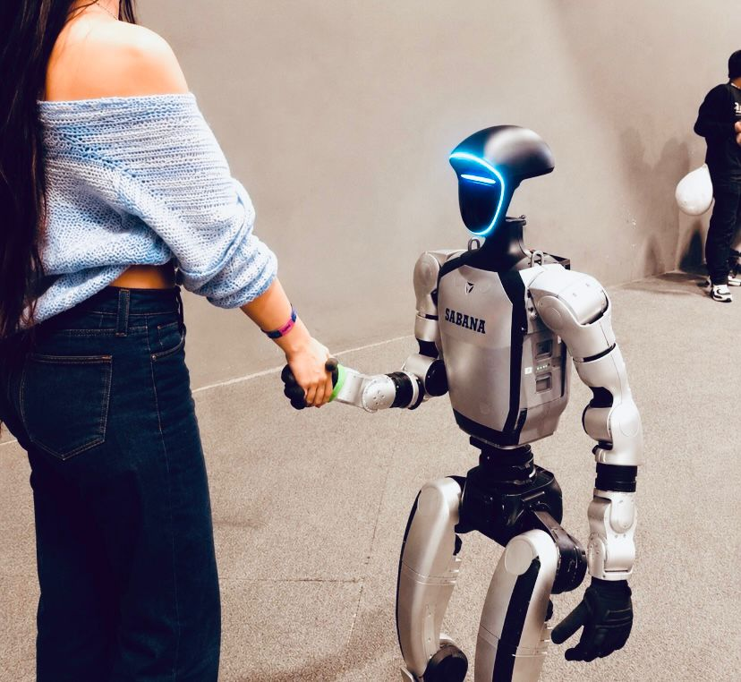
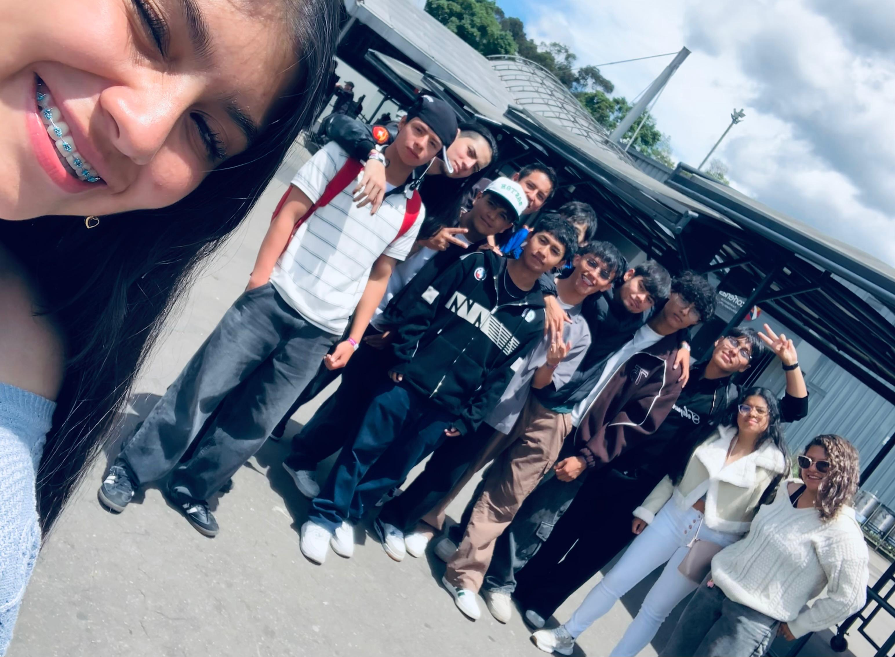
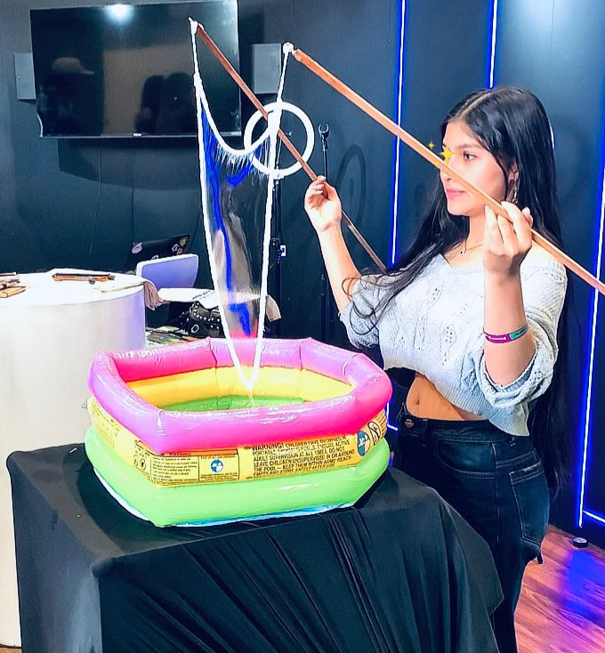

Robyn, un robot con inteligencia artificial capaz de hablar e interactuar con las personas. Fue mostrado como un ejemplo de los avances en robótica, tecnología e innovación digital.

También hubo momentos divertidos y tiempo para compartir risas con los compañeros de la ficha.

En Corferias no todo fue tecnología, también hubo actividades divertidas como juegos con burbujas, mostrando que distraerse y divertirse también es importante.